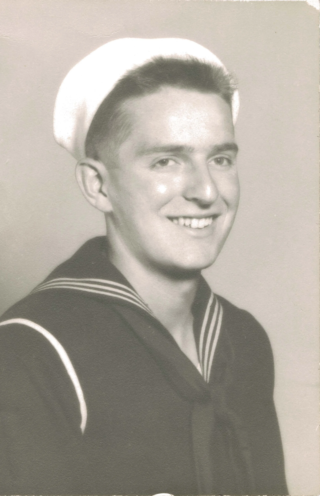
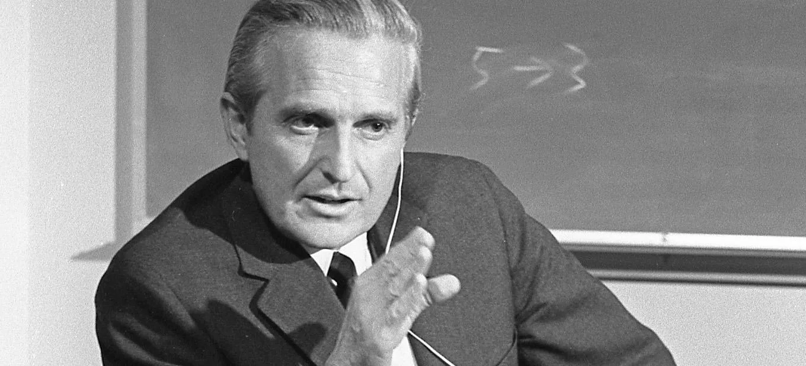
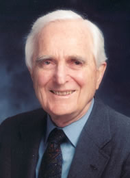

Hisotry of Douglas Engelbart
Early life of Douglas Engelbart
Douglas Engelbart was born in Portland, Oregan on January, 30th, 1925 and died July 2, 2013. Douglas grew up on a farm, he signed up as a radar techician for two years in the U.S navy in world war II, he completed his bachelor degree at Oregan state university in 1948.
Middle life of Douglas Engelbart
Douglas Engelbart got a job as a electrical engineer at the ames research center he quickly became disatisfied with his job, so had a idea that would change computers completly. His idea was to make a document that people could connect to and update and share information in "real time." He combined his knowledge from being a radar techician and his electrical engineering knowledge together with his idea to start creating the oN-Line system (nls) he then went a got a docterate in electrical engineering at the university of california, berkley. He stayed as a acting assitant professor for a year before accepting a position at the stanford reasearch institue (SRI). The SRI helped fund his research labatory where he could start inventing how he would be able to display data such as the computer mouse, the multiple window display, and hypermedia the linking of texts, images, video, and sound files within a single document. Him and William English collaborated together to invent and perfect the computer mouse. After inventing the mouse in 1967 Engelbarts labortory got transformed into a lab as a second place for the Advanced Reasearch projects agency networks (ARPANET) which was the primary precurser for the internet. in december 1968 he did the mother of all demos where he presented his new invention the NLS which is the first real time collabarartive computer system where he and his colleague where in two diffeerent places working on the same document using keyboards and his other new invention the mouse.
Later life of Douglas Engelbart
After his inventions the SRI started declining and his research team started going on to different reasearch teams. in 1977 SRI sold the NLS to a company called tymshare and renamed it into Augment and tried to make it a viable office automation system. Douglas was the last one on his research team and the SRI showed that they didn't care about his work anymore so he left and joined tymshare. In 1989 Douglas finally started getting recognition on all of his inventions but still took a long to be be fully recogized for his inventions.


